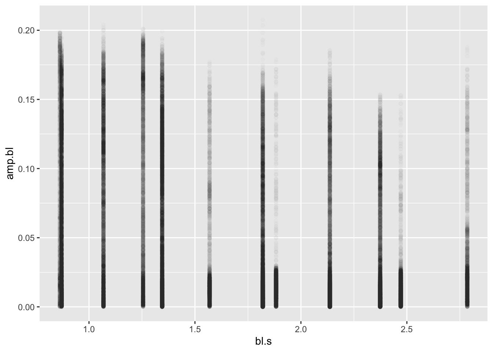
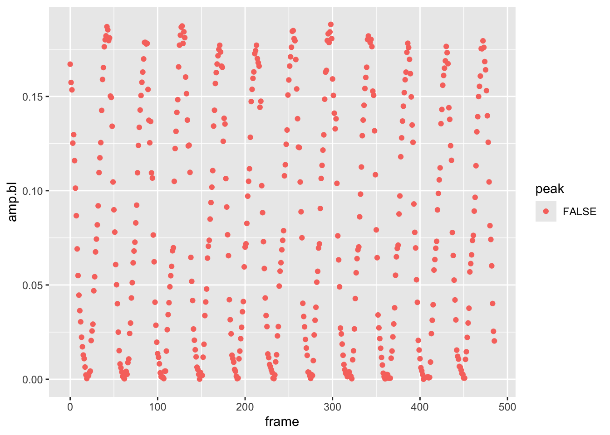
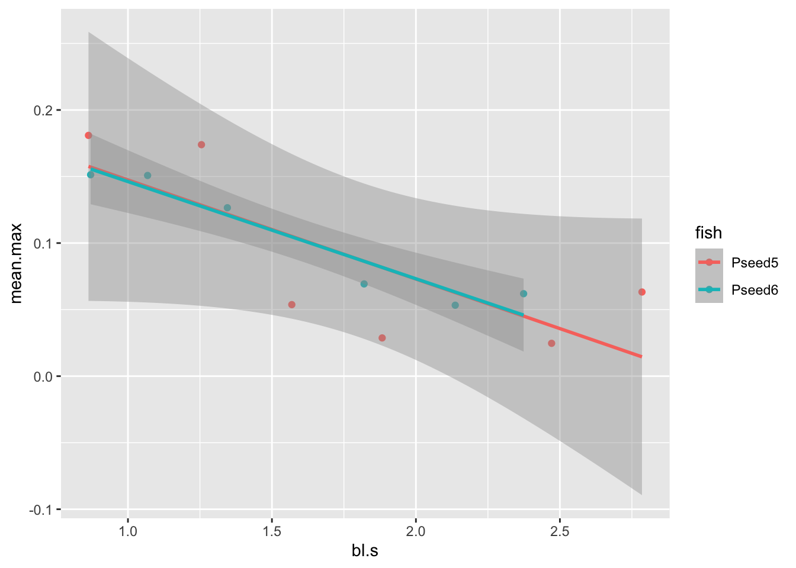

Module 2 Project
Introduction
Now that we have read and explored the basics of how to tidy, transform, and summarize data in R, let’s put some of these new skills into practice. In this exercise, we’ll work toward the goal of plotting kinematic data from a swimming fish. To do this, we’ll have to load data from text files, join related data tables, add new columns to the data based on other columns and a custom function, and summarize our data based on grouping variables.
Set up
There are several data sets that need to be loaded:
- A file of pectoral fin amplitude from two pumpkinseed sunfish at this link.
- A file containing the body length of pumpkinseed sunfish included in the study at this link.
- A file of the speeds at which specimens swam in the study at this link.
Let’s do so and then comment on the origin and importance of the data.
library(tidyverse) # Remember to load your libraries!
#Remember to set your working directory, too!
#load data
pseed <- read_csv("pseed.fin.amps.csv")## Rows: 73352 Columns: 7
## ── Column specification ──────────────────────────────────────────
## Delimiter: ","
## chr (3): fish, date, fin
## dbl (4): speed, frame, amp, amp.bl
##
## ℹ Use `spec()` to retrieve the full column specification for this data.
## ℹ Specify the column types or set `show_col_types = FALSE` to quiet this message.## Rows: 3 Columns: 2
## ── Column specification ──────────────────────────────────────────
## Delimiter: ","
## chr (1): fish
## dbl (1): bl
##
## ℹ Use `spec()` to retrieve the full column specification for this data.
## ℹ Specify the column types or set `show_col_types = FALSE` to quiet this message.## Rows: 119 Columns: 3
## ── Column specification ──────────────────────────────────────────
## Delimiter: ","
## dbl (3): vol, m.s, cm.s
##
## ℹ Use `spec()` to retrieve the full column specification for this data.
## ℹ Specify the column types or set `show_col_types = FALSE` to quiet this message.First, notice that we used read_csv() to load our .csv
data files rather than read.csv(). read_csv()
from the tidyverse package readr is identical
to read.csv(). However, it loads data as a tibble, an
object like a data.frame but one that works seamlessly with the other
functions contained in tidyverse.
The data loaded to pseed are amplitudes of pectoral fin
oscillations (i.e., fin beats) from two pumpkinseeds swimming across a
range of speeds in a swim tunnel. Points on the pectoral fin (red dots
in the video above) were tracked frame by frame automatically from video
files in R with the package trackter. The video above
represents 100 frames or so from one experiment. The data set includes
the following columns:
fish: The fish number in the experiment.speed: The voltage sent to the motor driving the prop that is moving the water. Higher voltages result in a faster motor speed.frame: The frame in the experiment video from which the data are taken.date: A date in the format “year-month-day-hourminutesecond” that identifies when the experiment started. This is unique for each experiment.amp: Fin amplitude in pixels.fin: From which fin, left or right, the amplitude was recorded.amp.bl: The specific fin amplitude as a proportion of body length (BL\(^{-1}\)).
This data set doesn’t include important information about the data, including the size of each specimen and what water speeds the motor speeds resulted in. These are critical data. For instance, data for locomotor speed are often reported as specific speeds, i.e., body lengths per second (BL\(\cdot\)s\(^{-1}\)) by physiologists to control for the difference in size between organisms. Using motor voltage wouldn’t be so helpful in this regard. To do something like compute the specific swimming speed, we need both the length of the specimen (in cm, say) and the speed of the water (in cm\(\cdot\)s\(^{-1}\)). Fortunately, we measured the BL of each fish and conducted calibration experiments to assess water speed for each motor voltage.
The size of each fish is contained in the “peed.lengths.csv” file
that we passed to the pseed.bl variable. It contains the
columns fish, the specimen number, and bl, the
body length in cm. The calibrated speed in cm\(\cdot\)s\(^{-1}\) of the flow tank according to motor
RPM is contained in the “pseed.calibration.csv” file that we passed to
the speeds variable. The columns in speeds
include vol, the motor voltage, m.s and
cm.s the water speed inside the flow tank resulting from
that voltage in in m\(\cdot\)s\(^{-1}\) and in cm\(\cdot\)s\(^{-1}\), respectively.
Our goal in this project is to qualitatively assess if pectoral-fin amplitude changes over the range of speeds swam by our two pumpkin seeds. To do this, we’ll plot these data (in convention dimension units of BL\(^{-1}\) for amplitude and BL\(\cdot\)s\(^{-1}\) for speed). This will require that we combine our data sets and perform some transformations on the data, adding new columns of data for plotting along the way.
More Complicated Operations: Joining Relational Data
As we learned in R4DS, separate but related data can exist in different places (i.e., different data frames or tibbles), yet have similar properties, specifically common attributes such as columns that contain the same data. By using these common attributes, known as keys, we can combine data to ask and answer a more expansive array of questions. In the context of analysis of data from scientific experiments, we often have many data files, including one that contains the results of the experiments and others that contain important data not recorded in the course of the experiments but that are essential to analysis.
Consider the pectoral-fin data we loaded and the goals we have. Our
main results table in pseed contains the the amplitude of
left and right pectoral fins recorded over many experiments for two fish
over many speeds. Our goal is to assess how amplitude varies with speed.
The speed in the main data table isn’t reported as a conventional unit,
like cm\(\cdot\)s\(^{-1}\), but rather as the motor voltage
that spun the prop. Higher voltages resulted in higher water speeds, but
we don’t know the exact relationship based on this alone and, thus, if
we worked with this table for analysis, we are left in the awkward
position of reporting our results for various speeds in voltage. Not
good.
You may be wondering How does water speed in the tunnel relate to swimming speed of a fish in it? Answer: think of the swim tunnel as a treadmill for aquatic locomotors (i.e., swimmers). If you were on a treadmill and set the speed to an 8-minute mile, the tread would be moving at 7.5 miles\(\cdot\)h\(^{-1}\). If you keep up with the tread, running stationary with reference the the space surrounding the treadmill, you’re running at 7.5 miles\(\cdot\)h\(^{-1}\). Therefore a fish swimming in place in a swim tunnel that is moving water at 5 cm\(\cdot\)s\(^{-1}\) is swimming at 5 cm\(\cdot\)s\(^{-1}\)
To easily plot data and undertake our qualitative analysis, we need
amplitude and swim/water speed in the same table. Fortunately, we have
loaded the tunnel’s water speed as it varies with motor voltage. To
combine the data, we must perform a merge or join operation. In this
case, we need to perform an outer
join whereby we add observations that appear in at least one of the
tables. By this I mean that we have many observations (over 74,000!) of
amplitude, each with an associated speed value in voltage in the main
data table and fewer observations of voltages and associated water
speeds in another (i.e., one voltage and water speed in each row). We
want to add these water speeds to the many observations in our main
pseed table.
Joining data tables in this way requires that we identify a key, a
common attribute to both tables whose values will be used to add the new
data to the table. What is this key? It’s voltage, represented in the
pseed table as speed and the
speeds table as vol.

In the figure above, we see the two tables and their columns
represented. The key columns are outlined in gray. The arrow indicates
the direction and manner of the join: the smaller speeds
table that, based on the key values will add the remaining
m.s and cm.s columns to the pseed
table on its left.
Fortunately, the powerful data analysis package dplyr in
the tidyverse has a join function for just such an
operation: join_left(), joining new data to left data.
Here’s how this works:
## # A tibble: 73,352 × 9
## fish speed frame date amp fin amp.bl m.s cm.s
## <chr> <dbl> <dbl> <chr> <dbl> <chr> <dbl> <dbl> <dbl>
## 1 Pseed5 43 0 2019-06-17-151149 88.3 L 0.167 0.11 11
## 2 Pseed5 43 0 2019-06-17-151149 101. R 0.190 0.11 11
## 3 Pseed5 43 1 2019-06-17-151149 83.2 L 0.157 0.11 11
## 4 Pseed5 43 1 2019-06-17-151149 99.4 R 0.188 0.11 11
## 5 Pseed5 43 2 2019-06-17-151149 81.1 L 0.154 0.11 11
## 6 Pseed5 43 2 2019-06-17-151149 97.0 R 0.184 0.11 11
## 7 Pseed5 43 3 2019-06-17-151149 66.2 L 0.125 0.11 11
## 8 Pseed5 43 3 2019-06-17-151149 92.9 R 0.176 0.11 11
## 9 Pseed5 43 4 2019-06-17-151149 68.6 L 0.130 0.11 11
## 10 Pseed5 43 4 2019-06-17-151149 88.8 R 0.168 0.11 11
## # ℹ 73,342 more rowsHere we create a new tibble by passing pseed with the
pipe %>% to a left_join() function. The
left_join() operation takes the speeds table
and joins it leftward to the pseed table. The
by parameter specifies by what columns to join the tables,
i.e., the key values for each. Notice that the names of the key values
are different because the key columns have different names in
pseed and speeds. With print(),
we printed the new table, complete with m.s and
cm.s columns. Notice that there’s no vol
column added from the speeds table. Voila, almost
there.
Mutation: Adding Data to Data from its Own Data
Great, we have speed in cm and m\(\cdot\)s\(^{-1}\) added to our results table,
however, it is common practice in physiology to report locomotor speeds
as specific speeds, that is, as a proportion of body lengths per second
(BL\(\cdot\)s\(^{-1}\)). This means we need to add BL to
our results table pseed and compute the specific speed,
that is divide BL (in cm) by cm\(\cdot\)s\(^{-1}\) to get BL\(\cdot\)s\(^{-1}\). Fortunately, we have BL
information contained in our pseed.bl tibble.
## # A tibble: 3 × 2
## fish bl
## <chr> <dbl>
## 1 Pseed1 13.3
## 2 Pseed5 12.7
## 3 Pseed6 12.6Notice that this tibble contains three values for fish
and we only have two fish in our new results table, “Pseed5” and
“Pseed6”:
## # A tibble: 2 × 1
## fish
## <chr>
## 1 Pseed5
## 2 Pseed6To join pseed.bl to pseed2, the logical key
value would be the column fish, a column common to both
tibbles. You might at first think that a join operation would be
complicated because the key values of each table aren’t identical (i.e.,
“Pseed5” and “Pseed6” in pseed but “Pseed1”, “Pseed5”, and
“Pseed6” in pseed.bl. Because the table we’re joining to
pseed has one additional value (“Pseed1”), all the values
in the pseed2 fish column are present in the
pseed.bl fish column. So, we won’t have a
problem. By default, an outer join operation in dplyr like
left_join() will only add values to the leftward table if
the key value is present in both tables. However, if the opposite was
the case and the key column in the leftward table contained more values
than the right table to join, we’d have a problem. Say, there was a
value of “Pseed2” in the key column fish of the
pseed2 table. There’d be no matching value in the key
column fish in pseed.bl and a value of “NA”
would be added to the new joined table.
Let’s go ahead and join the body length table pseed.bl
with the results tibble pseed2 using
left_join() again. Notice we’ll redefine
pseed2 as this new merged tibble:
## # A tibble: 73,352 × 10
## fish speed frame date amp fin amp.bl m.s cm.s bl
## <chr> <dbl> <dbl> <chr> <dbl> <chr> <dbl> <dbl> <dbl> <dbl>
## 1 Pseed5 43 0 2019-06-17-151149 88.3 L 0.167 0.11 11 12.7
## 2 Pseed5 43 0 2019-06-17-151149 101. R 0.190 0.11 11 12.7
## 3 Pseed5 43 1 2019-06-17-151149 83.2 L 0.157 0.11 11 12.7
## 4 Pseed5 43 1 2019-06-17-151149 99.4 R 0.188 0.11 11 12.7
## 5 Pseed5 43 2 2019-06-17-151149 81.1 L 0.154 0.11 11 12.7
## 6 Pseed5 43 2 2019-06-17-151149 97.0 R 0.184 0.11 11 12.7
## 7 Pseed5 43 3 2019-06-17-151149 66.2 L 0.125 0.11 11 12.7
## 8 Pseed5 43 3 2019-06-17-151149 92.9 R 0.176 0.11 11 12.7
## 9 Pseed5 43 4 2019-06-17-151149 68.6 L 0.130 0.11 11 12.7
## 10 Pseed5 43 4 2019-06-17-151149 88.8 R 0.168 0.11 11 12.7
## # ℹ 73,342 more rowsWe now have BL in cm stored in a bl column. Now we need
to compute specific speed in BL\(\cdot\)s\(^{-1}\). Because pseed2 now
contains cm.s (cm\(\cdot\)s\(^{-1}\)) and bl (in cm), all
that’s left to do is compute a new bl.s column based on
dividing cm.s by bl.s. For this, we’ll mutate
the tibble, that is, add a new column with this calculation.
## # A tibble: 73,352 × 11
## fish speed frame date amp fin amp.bl m.s cm.s bl bl.s
## <chr> <dbl> <dbl> <chr> <dbl> <chr> <dbl> <dbl> <dbl> <dbl> <dbl>
## 1 Pseed5 43 0 2019-06-17-151… 88.3 L 0.167 0.11 11 12.7 0.863
## 2 Pseed5 43 0 2019-06-17-151… 101. R 0.190 0.11 11 12.7 0.863
## 3 Pseed5 43 1 2019-06-17-151… 83.2 L 0.157 0.11 11 12.7 0.863
## 4 Pseed5 43 1 2019-06-17-151… 99.4 R 0.188 0.11 11 12.7 0.863
## 5 Pseed5 43 2 2019-06-17-151… 81.1 L 0.154 0.11 11 12.7 0.863
## 6 Pseed5 43 2 2019-06-17-151… 97.0 R 0.184 0.11 11 12.7 0.863
## 7 Pseed5 43 3 2019-06-17-151… 66.2 L 0.125 0.11 11 12.7 0.863
## 8 Pseed5 43 3 2019-06-17-151… 92.9 R 0.176 0.11 11 12.7 0.863
## 9 Pseed5 43 4 2019-06-17-151… 68.6 L 0.130 0.11 11 12.7 0.863
## 10 Pseed5 43 4 2019-06-17-151… 88.8 R 0.168 0.11 11 12.7 0.863
## # ℹ 73,342 more rowsHere we passed pseed2 to a mutate()
operation to add the new column, bl.s, based on the
division of cm.s by bl.s. Note that we
redefined pseed2 as this new mutated tibble containing the
specific swimming speed in the bl.s column.
Let’s now use ggplot, our fantastic plotting package
included in tidyverse to plot specific fin amplitude
(amp.bl) against specific swimming speed
(bl.s).
First of all, this is some sort of a mess: just a bunch of points for
each speed. But, let’s briefly breakdown what we did with
ggplot (in our next module, we’ll go into more specifics).
We passed pseed2 to a new plot with ggplot()
and specified what it should look like with the aes()
parameter. This is the aesthetic of the plot. Specifically, we want the
x axis to reflect bl.s values in pseed2 and
the y axis to reflect amp.bl. To this we added a geometry
layer, a specific type of plot, in this case, a scatter or point plot
with geom_point().
This plot is indeed a mess. We have so many plotted y values (over
74,000!) that we can’t say much about the pattern in question
amp.bl vs. bl.s. In this case it, it may be
that we have a lot of overlapping points, obscuring any patterns. To
confirm this suspicion, we can simply adjust the transparency of the
points with the alpha parameter in ggplot. The
lower the value for alpha (from 0-1), the more transparent
the geometry being plotted. Let’s try a really low alpha of
0.01, something like:

One thing should be apparent here: there are a lot of low values for
each speed and many fewer high values. Duh! This is a flapping fin! That
is, it moves through a range of motion from a low amplitude to high and
back again. Let’s look at the left pelvic fin for only one experiment
identified by the first value of the date column by using
the filter() function. Let’s look at the amplitude over
each frame by plotting these values.

Yep, the fin amplitude is oscillating for sure, just like you would predict a flapping fin would. Maybe it’s not simply amplitude we should be looking at.
Using Customized Functions
Maybe it’s not simply amplitude we care about. In the the plot above, we see that the pectoral fin is oscillating like a sine wave. Perhaps we should look at the max amplitude across speeds. The max amplitude corresponds to the peak of each wave. But how do we find this value? One part of the power of scripting in R is that someone has probably written a package to do just what you want to do. Another powerful aspect of R is that you can write customized functions from these packages to suit your needs.
The R package features is super handy here. It’s main
function features(), so cleverly named, can find local
minima and maxima (i.e., peaks and troughs) of curvy data. Install and
then load the features library:
## Loading required package: lokernLet’s first see what the features() function can do for
us by running the first experiment through this function:
exp1 <- pseed2%>%
filter(date=="2019-06-17-151149", fin=="L")
f1 <- features(x = exp1$frame,y=exp1$amp.bl)->f1features() will only accept a vector for the x and y
data of a curvy relationship. So we have to break up our filtered
pseed2 table so that it can be used by the function. Here
we made an epx1 data.frame and passed the
frame column to the x parameter and amp.bl to
the y parameter. We saved the results of the features()
operation to f1. Let’s see what features()
gave us with the fget() function in features
(it simply extracts the important stuff from the results):
## $f
## fmean fmin fmax fsd noise snr d1min d1max fwiggle ncpts
## 0.08 0.00 0.18 0.06 0.00 18.47 -0.02 0.02 0.00 24.00
##
## $crit.pts
## [1] 19.92 42.16 61.53 85.99 105.65 127.95 148.53 170.62 190.30 212.76
## [11] 232.17 254.97 274.77 296.66 319.31 342.19 360.95 362.58 363.14 386.29
## [21] 406.06 429.80 449.15 471.88
##
## $curvature
## [1] 0 0 0 0 0 0 0 0 0 0 0 0 0 0 0 0 0 0 0 0 0 0 0 0
##
## $outlier
## [1] 3 45 92 118 137 138 174 175 177 218 304fget() tells us that there are 24 critical points (where
the curvature (i.e., second derivative) of the curve is 0) in the
“crit.ptsoutput. Let's plot vertical lines that correspond to the critical points over our original plot of the first experimnet'samp.blvs.frame`:
pseed2%>%
filter(date=="2019-06-17-151149", fin=="L")%>%
ggplot(aes(x=frame,y=amp.bl))+geom_point()+geom_vline(xintercept = fget(f1)$crit.pts)This is pretty good. We get all the peaks (the maxima of amplitude
we’re after). We’re missing some troughs and have a few lines close to
one another, likely due to noise. But, this isn’t a problem because
we’re after the peaks only. How to isolate the peaks? That’s a matter of
looking at the curvature form the fget() output: by
convention, negative curvature indicates a convex line, positive
curvature a concave line. Peaks, in other words, will have a negative
curvature. There’s a problem here. We see that from the
fget() output above that the curvature for each critical
point comes back as 0 in all cases. We’re getting 0 for the curvature
values because the second derivative of our low specific amplitudes is
really small and features() defaults to outputs of two
decimal points, i.e., it rounds. If we merely multiply our amplitude
values by 100, we’ll see that some curvatures are negative (the peaks),
while some are positive (the troughs). Let’s rerun
features()with this change and see what we get.
## $f
## fmean fmin fmax fsd noise snr d1min d1max fwiggle ncpts
## 8.02 0.08 18.46 6.26 0.34 18.51 -2.20 1.60 0.15 24.00
##
## $crit.pts
## [1] 19.92 42.16 61.53 85.99 105.65 127.95 148.53 170.62 190.30 212.76
## [11] 232.17 254.97 274.77 296.66 319.31 342.19 360.95 362.58 363.14 386.29
## [21] 406.06 429.80 449.15 471.88
##
## $curvature
## [1] 0.15 -0.28 0.08 -0.32 0.13 -0.28 0.15 -0.26 0.14 -0.23 0.12 -0.28
## [13] 0.18 -0.28 0.08 -0.26 0.05 0.06 0.07 -0.29 0.03 -0.31 0.12 -0.27
##
## $outlier
## [1] 3 45 92 118 137 138 174 175 177 218 304Very good, we now get postie and negative curvatures for the critical
points. Now let’s pull out the peaks, choosing those critical points
that are negative. Let’s make a tibble so we can use our
tidyverse skillzzzz.
f.tib <- fget(f2)[2:3]%>%
as_tibble()%>%
filter(curvature<0)%>%
mutate(peaks=round(crit.pts,0))%>%
print()## # A tibble: 11 × 3
## crit.pts curvature peaks
## <dbl> <dbl> <dbl>
## 1 42.2 -0.28 42
## 2 86.0 -0.32 86
## 3 128. -0.28 128
## 4 171. -0.26 171
## 5 213. -0.23 213
## 6 255. -0.28 255
## 7 297. -0.28 297
## 8 342. -0.26 342
## 9 386. -0.29 386
## 10 430. -0.31 430
## 11 472. -0.27 472Here we took the second and third elements—the critical points and
curvatures, respectively—of the f2 output from
features() and passed it to a new tibble. Then
filter() is applied so that we output only the peaks to
f.tib. Finally, the estimated critical points in terms of
frame that were calculated by freatures() is not an integer
value like frame should be. So we create a new column,
peaks that has this discrete value based on a rounding
operation of crit.pts.
pseed2%>%
filter(date=="2019-06-17-151149", fin=="L")%>%
mutate(peak=frame %in% f.tib$peaks)%>%
ggplot(aes(x=frame,y=amp.bl,col=peak))+geom_point()
Looks like we have a rather sophisticated and reliable way to find peaks in the amplitude data that we can then use to calculate the max amplitude across a set of frames while the fin is oscillating. However, we’ve just done this for one experiment and there are how many experiments?
## # A tibble: 1 × 1
## n
## <int>
## 1 50That’s right, 50. And remember, there are two fins to consider! To
find the max amplitude for each fin during each oscillation, we could
write a for loop and use the code above to find the peaks
over the frames of each experiment for each fin. However, this would be
a lot of code and, as it turns out, rather slow. Let’s consider another
way: passing a custom function to the defined groups in our data set
(date for experiment and fin).
To accomplish this, we can construct this custom function from the
code we wrote to find the max amplitudes for the left fin in the first
experiment. Let’s define this function find.peaks() thusly
and break down its components with some comments:
find.peaks <- function(x,y,mult=100){ #define the functions parameter/inputs:x,y, and how much we won't to multiple y by (remember the rounding issue)
f <- fget(features(x = x,y=y*mult))[2:3]%>% #store results in `f` and compute the features for the x-y relationship, wrap in in fget to retrieve the important features, subset the results to take the 2nd and 3rd and items, the critical points and curvature, then pass it to a tibble
as_tibble()%>% # pass in through a filter that returns curvatures <0
filter(curvature<0)%>% #add a column that rounds the critical point to an integer that represents the frame
mutate(peaks=round(crit.pts,0))
return(f$peaks) # return the peaks from tibble
}Here we define the function’s parameters, and then between
{}, ask r to perform some operations on these inputs.
Lastly, before the }, we ask R to return some value (the
peaks).
Let’s now see how this function works on our data set
pseed2. Remember, we have 50 experiments and two fins and
even though passing a function to groups using dplyr is
easier and faster than running a loop, it will still take a while. So
let’s use a filter to limit the operation at first, using only the first
3 unique values of the date column, i.e., the first 3 experiments. Let’s
run the following and break it down.
pseed2%>%
filter(date%in%unique(date)[1:3])%>%
group_by(date,fin)%>%
mutate(peak=frame %in% find.peaks(frame,amp.bl))%>%
ggplot(aes(x=frame,y=amp.bl,alpha=peak,col=peak))+geom_point()+facet_grid(date~fin)## Warning: Using alpha for a discrete variable is not advised.After the filter, we:
- Grouped the data by
date(experiment) andfin - We then added a column
peakto the data set. This new column returned the results of a logical operation: *is the frame in a set of peaks found byfind.peaks). - Lastly, we plotted the amplitude over frame, controlling the transparency and color of the point according to whether it’s a peak or not.
Notice the we added something new, a grid with
facet_grid(). This breaks the plot up into a grid according
values in the data. This function takes a formula as input which
corresponds to “row facets ~ column facets”, that is, what should the
rows and columns in the grid represent. Here make a grid of
dates/experiments in the plot’s rows and fin in the columns. As a
result, we get a 3x2 plot.
It looks like this new function of ours did a really nice job of finding the peaks in each of the experiments and fins. Let’s do this for ALL the data. Remember, we have 100 individual groups to apply this function to and determine if the frame in each corresponds to a peak. So, run this code without the plotting operations and a final filter to only return the frames that correspond to a peak. Check the weather and then come back after 90s or so.
pseed.max <- pseed2%>%
group_by(date,fin)%>%
mutate(peak=frame %in% find.peaks(frame,amp.bl))%>%
filter(peak==T) #new filterThis produces a tibble of 3300 amplitudes representing those at the
peak of each oscillation. Let’s come back to our original question:
How does amplitude change with speed? by plotting specific
amplitude against specific swimming speed and adding a smooth line that
represents a linear regression model (method="lm").
## `geom_smooth()` using formula = 'y ~ x'There we have it. It’s a little noisy, but it looks like amplitude does indeed decrease with with speed! To confirm, maybe we want to run a simple statistical test on this model, an ANOVA, say:
## Df Sum Sq Mean Sq F value Pr(>F)
## bl.s 1 5.038 5.038 1658 <2e-16 ***
## Residuals 3300 10.027 0.003
## ---
## Signif. codes: 0 '***' 0.001 '**' 0.01 '*' 0.05 '.' 0.1 ' ' 1We see in Pr(>F) that the p value is much lower than
0.05, indicating a significant relationship.
Next Steps
As newly minted data scientists, you may not like that there are
hundreds of observations for each speed. This may bias the results if we
have clustered high and low points. In addition, you may wonder if the
max amplitude may vary with speed differently between the two fish in
our experiment. Let’s compute means for each speed and for each fish.
For this we can trot out the summarize() function in
dplyr. Let’s also plot our means vs. speed and a linear
regression line for each fish. Something like:
pseed.max %>%
group_by(fish, bl.s) %>%
summarize(mean.max=mean(amp.bl)) %>%
ggplot(aes(x=bl.s,y=mean.max,col=fish))+geom_point()+geom_smooth(method="lm")## `summarise()` has grouped output by 'fish'. You can override
## using the `.groups` argument.
## `geom_smooth()` using formula = 'y ~ x'
Pivoting to Different Questions
In our readings of R4DS, we learned about tidy data. Specifically, tidy data are a data set that meets the following requirements: 1. Each variable must have its own column. 2. Each observation must have its own row. 3. Each value must have its own cell.
Fortunately the data sets we’ve been working with in this project are tidy. We have observations for a fin, on fish, during an experiment, at certain speed. Each of these variables have their own column. This allows us to compute operations across rows and by groups according to column variables (experiment, fin, fish, etc.). If our data weren’t we could use pivoting operations we learned about to make it tidy. However, sometimes you want to make additional observations, asking a different question even, and we need to do the pivoting operations just the same.
In asking how each fin’s amplitude varies with each speed across
fish, we can do operations on these variables and plot them easily
enough as we just have. But, what if the question changes to what is
the sum of amplitude of both fins over our range of
speeds? Because our data are tidy and the amplitude of each fin is
in a different row for each frame, this is made difficult. Have a look
at pseed2 again:
## # A tibble: 73,352 × 11
## fish speed frame date amp fin amp.bl m.s cm.s bl bl.s
## <chr> <dbl> <dbl> <chr> <dbl> <chr> <dbl> <dbl> <dbl> <dbl> <dbl>
## 1 Pseed5 43 0 2019-06-17-151… 88.3 L 0.167 0.11 11 12.7 0.863
## 2 Pseed5 43 0 2019-06-17-151… 101. R 0.190 0.11 11 12.7 0.863
## 3 Pseed5 43 1 2019-06-17-151… 83.2 L 0.157 0.11 11 12.7 0.863
## 4 Pseed5 43 1 2019-06-17-151… 99.4 R 0.188 0.11 11 12.7 0.863
## 5 Pseed5 43 2 2019-06-17-151… 81.1 L 0.154 0.11 11 12.7 0.863
## 6 Pseed5 43 2 2019-06-17-151… 97.0 R 0.184 0.11 11 12.7 0.863
## 7 Pseed5 43 3 2019-06-17-151… 66.2 L 0.125 0.11 11 12.7 0.863
## 8 Pseed5 43 3 2019-06-17-151… 92.9 R 0.176 0.11 11 12.7 0.863
## 9 Pseed5 43 4 2019-06-17-151… 68.6 L 0.130 0.11 11 12.7 0.863
## 10 Pseed5 43 4 2019-06-17-151… 88.8 R 0.168 0.11 11 12.7 0.863
## # ℹ 73,342 more rowsNote each frame has two rows, one for each fin. How would we compute
the sum of the amplitude for each frame? You might at first think we
should add column (say amp.sum) to the tibble that
represents the sum of the amplitudes, left and right, for each frame
across experiments:
When we do this, our data now violates a tidy principle, namely that
each data value must have it’s own cell (especially data that are
responses to other variables we care about!). Look at our
amp.sum column and you see that each value spans two cells,
one for each fin. This makes the data appear as if there is an
amp.sum for each fin. To fix this, and keep the data tidy,
we could delete one of the rows for each frame in each experiment:
## # A tibble: 36,676 × 12
## # Groups: date, frame [36,676]
## fish speed frame date amp fin amp.bl m.s cm.s bl bl.s amp.sum
## <chr> <dbl> <dbl> <chr> <dbl> <chr> <dbl> <dbl> <dbl> <dbl> <dbl> <dbl>
## 1 Pseed5 43 0 2019-0… 101. R 0.190 0.11 11 12.7 0.863 0.357
## 2 Pseed5 43 1 2019-0… 99.4 R 0.188 0.11 11 12.7 0.863 0.346
## 3 Pseed5 43 2 2019-0… 97.0 R 0.184 0.11 11 12.7 0.863 0.337
## 4 Pseed5 43 3 2019-0… 92.9 R 0.176 0.11 11 12.7 0.863 0.301
## 5 Pseed5 43 4 2019-0… 88.8 R 0.168 0.11 11 12.7 0.863 0.298
## 6 Pseed5 43 5 2019-0… 82.0 R 0.155 0.11 11 12.7 0.863 0.271
## 7 Pseed5 43 6 2019-0… 74.3 R 0.141 0.11 11 12.7 0.863 0.242
## 8 Pseed5 43 7 2019-0… 66.1 R 0.125 0.11 11 12.7 0.863 0.212
## 9 Pseed5 43 8 2019-0… 57.3 R 0.108 0.11 11 12.7 0.863 0.178
## 10 Pseed5 43 9 2019-0… 49.7 R 0.0939 0.11 11 12.7 0.863 0.149
## # ℹ 36,666 more rowsBut, I’m sure you see the problem—we’ve lost half our data and
amp.sum appears to apply only to the right fin. We can
avoid this problem by pivoting our data, making it wider. That is, we
can give left and right fins their own amplitude column and sum the
values of these to get our sum of amplitude. Here’s how with
pivot_wider():
pseed.wide <- pseed2 %>%
select(-amp)%>%
pivot_wider(names_from = fin,values_from = amp.bl) %>%
mutate(amp.sum=L+R)%>%
print() ## # A tibble: 36,676 × 11
## # Groups: date, frame [36,676]
## fish speed frame date m.s cm.s bl bl.s amp.sum L R
## <chr> <dbl> <dbl> <chr> <dbl> <dbl> <dbl> <dbl> <dbl> <dbl> <dbl>
## 1 Pseed5 43 0 2019-06-17-… 0.11 11 12.7 0.863 0.357 0.167 0.190
## 2 Pseed5 43 1 2019-06-17-… 0.11 11 12.7 0.863 0.346 0.157 0.188
## 3 Pseed5 43 2 2019-06-17-… 0.11 11 12.7 0.863 0.337 0.154 0.184
## 4 Pseed5 43 3 2019-06-17-… 0.11 11 12.7 0.863 0.301 0.125 0.176
## 5 Pseed5 43 4 2019-06-17-… 0.11 11 12.7 0.863 0.298 0.130 0.168
## 6 Pseed5 43 5 2019-06-17-… 0.11 11 12.7 0.863 0.271 0.116 0.155
## 7 Pseed5 43 6 2019-06-17-… 0.11 11 12.7 0.863 0.242 0.101 0.141
## 8 Pseed5 43 7 2019-06-17-… 0.11 11 12.7 0.863 0.212 0.0867 0.125
## 9 Pseed5 43 8 2019-06-17-… 0.11 11 12.7 0.863 0.178 0.0691 0.108
## 10 Pseed5 43 9 2019-06-17-… 0.11 11 12.7 0.863 0.149 0.0550 0.0939
## # ℹ 36,666 more rowsWhat we did is create a wider tibble (i.e., one with more columns) by:
- Passing
pseed2through aselect()operation to remove the unneededampcolumn (we’ll concentrate as we have on the specific amplitude,amp.bl). - Passing the new tibble to a
pivot_wider()operation the pulls the names from thefincolumn and the data from theamp.blcolumn. Notice how there’s now new columns with amplitude data,LandR. - Lastly, we add our new column
amp.sumusingmutate().
You’re now ready to take the rains and repeat our previous analyses
using the amp.sum data to answer the question, How
does the sum of amplitude of both fins vary over our range of
speeds?
Project Report
In this project report, you’ll use the principles and tools outlined
above to analyze the amp.sum data in our
pseed.wide tibble in the same manner we analyzed amplitude
data for each fin. You’ll also create your own custom function to add
another piece of information to our analysis.
For this project report, perform the following tasks.
- In a script named “your_module2.R”, combine the code above so that
you can establish the
pseed.widedata tibble. - Create a custom function that computes the standard error of the mean (SE). [see #3 and below]
- Compute the mean maximum* of all
the
amp.sums across all fin-beat cycles for each specific swimming speed for each fish just like we did for mean maximum amplitude of each fin (i.e., the mean of all the max amplitudes across all cycles for each experiment for each fish). Make sure this is contained in a new tibble namedpseed.sum.max. Call this columnamp.sum.mean. - While establishing
pseed.sum.max, add a column to your summary tablepseed.sum.maxfor SE and call itamp.sum.se. - Using
ggplot, plot the meanamp.sumvs. specific swimming speed and add error bars that correspond to the SE ofamp.sum. Be sure to color your points and error bars by specimen (fish). - Download this file, read it as a
tibble and merge it with the your new
pseed.sum.maxtibble. [see below]. - Use
ggplotto plot the metabolic power output of each fish vs. mean maximum ofamp.sum. - Include the code for all the tasks listed above in the “yourname_module2.R” script and push it to your teams repo.
Why compute the standard error of the mean? Often, scientists like to report standard deviation, the degree to which individuals within the sample differ from the sample mean. But, when reporting sample means, it’s nice to report how well that mean is likely to reflect the population mean. This is where SE comes in. It represents an estimate of how far the sample mean is likely to be from the population mean.
What’s in the “pseed.met.rate.csv” file? This file
represents the active metabolic rate while swimming (the swim tunnel is
both a treadmill for fishes and a closed metabolic chamber). You’ll
notice many of the same columns as our kinematic data and one new one:
met.rate, the metabolic power output in W\(\cdot\)kg\(^{-1}\).
Submissions are due by 11:59 PM on Sunday, September 18th.